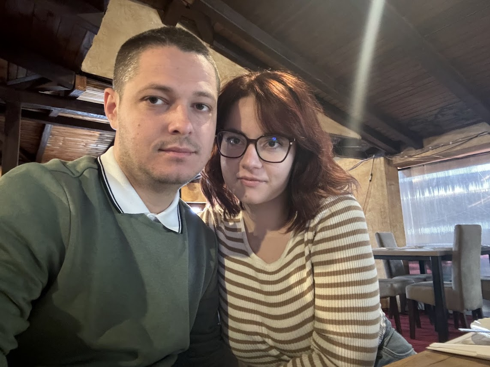

Jovana Ivanovic

Summary
I am flexible, reliable and possess excellent time keeping skills. I am an enthusiastic, self-motivated, reliable, responsible and hard working person. I am a mature team worker and adaptable to all challenging situations. I am able to work well both in a team environment as well as using own initiative.
Education
- High medical school
- Medical school of vocational studies in Belgrade
Work Experiance
June 2018-May 2019
- Maintains production and quality of radiographs by following established standards and procedures, developing radiographs, observing radiographic results, and making necessary adjustments. Documents patient care services by charting in patient and department records.

Awards and Sertification
Other
About me
Contact me